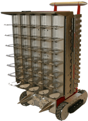

The Hive automation platform automates laboratory processes and is fully customizable using standard products to match your workflow, storage and throughput requirements. The Hive footprint is similar to most laboratory benches so uses less of your precious lab space.
The unique design of the Hive allows use of the entire workspace, including above- and below-deck spaces. It facilitates compact system integration of BioNex instruments with third-party devices without compromising performance. Most devices face the front of the platform for easy offline use and serviceability. Not limited to a specific size, the Hive can be expanded to integrate multiple or larger devices.
Adding simultaneous-access storage allows plates and consumables to be loaded and unloaded during runs, eliminating traditional deck resetting time. One side of the storage module is dedicated to the Hive robotic arm while the other can be loaded by an operator or with BeeSmart Karts™, which are manually loaded at sample and consumable labs/stores remote from the Hive. Loaded Karts are driven to the Hive and docked for material transfer. The storage module is fully customizable for any combination of plate types and consumables at any capacity.
Request QuoteProduct Data sheet